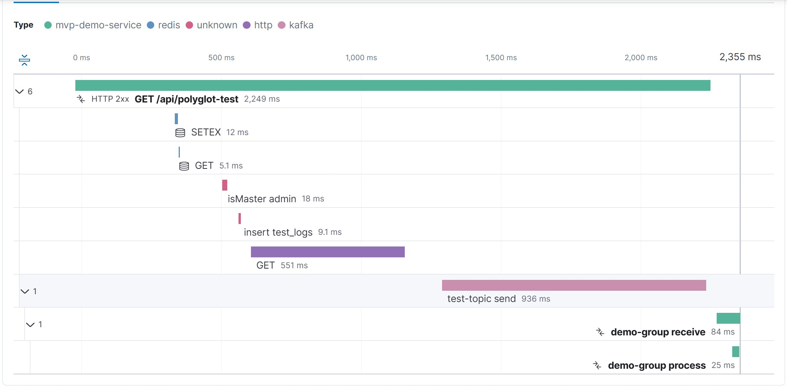

Observability Standard
Tài liệu hướng dẫn thực thi & vận hành toàn diện
System Architect
Developer
DevOps
QA
Triết lý Observability (3 Trục Dữ Liệu)
📝 Logging
Nhật ký chi tiết có cấu trúc (Structured JSON). Lưu trữ các thông tin có ngữ cảnh rõ ràng về những gì đã xảy ra.
🔗 Tracing
Theo vết hành trình của Request qua hệ thống phân tán thông qua TraceId và SpanId.
📈 Metrics
Dữ liệu tổng hợp theo chuỗi thời gian (Aggregated Time-series) như RPS, CPU, Error Rate, Latency.
SDK & Trách Nhiệm Dev
Trách nhiệm của Dev
- Cài đặt NuGet
ISC.Observability - Gọi
builder.AddStandardObservability() - Gọi
app.UseStandardObservability() - Ghi log các cột mốc quan trọng có chứa Context
SDK Auto Features
- Global Exception Handling
- HTTP Request Logging tự động
- Auto-Correlation (Trace/Span Injection)
- PII Masking (Che mờ dữ liệu nhạy cảm)
- Runtime Metrics (.NET/GC/Memory)
Distributed Tracing Visualization

Luồng Dữ liệu & Kafka
flowchart LR
App[Ứng dụng / Microservice] -->|OTLP| OTel[OpenTelemetry Collector]
OTel -->|Batch/Filter| Kafka[Kafka Topics]
OTel -->|Direct| ES[Elasticsearch]
Kafka --> Consumers[Log/Metric Consumers]
ES --> Kibana[Kibana Dashboards]
⚠️ Anti-Pattern WarningKhông đẩy log hoặc trace trực tiếp từ Ứng dụng vào Kafka hoặc Elasticsearch. Phải đi qua OTel Collector (Single OTLP Path) để xử lý backpressure, retry và batching tập trung.
Tiêu Chuẩn Vận Hành (4 Layers)
Layer 1: Executive Overview
24/7 Monitoring, Golden Signals (RPS, Errors, Latency). Cảnh báo tổng quan.
Layer 2: Developer Deep-Dive
TraceId Debugging, APM, theo dõi chi tiết lỗi từng Endpoint.
Layer 3: Infrastructure & Runtime
Memory, GC, ThreadPool, Resource Saturation.
Layer 4: QA Compliance Tracker
Quality Gate 2, đo lường sự tuân thủ chuẩn Observability.
Dashboards Live Preview


© 2026 Observability Standard. All rights reserved.